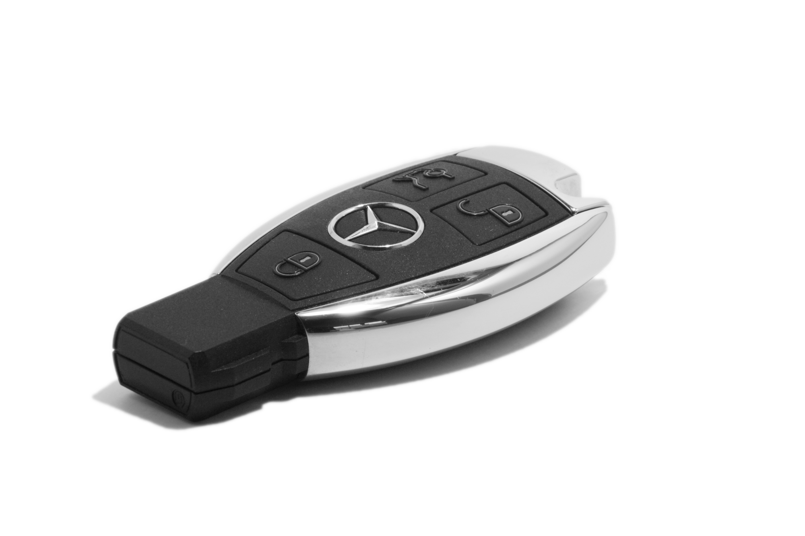

Дубликаты автоключей
Изготовление запасных ключей для легковых автомобилей, микроавтобусов и коммерческого транспорта.
Дубликаты автоключей, чип-ключи, программирование, ремонт корпусов и восстановление ключей при утере. Работаем с обычными ключами, выкидными ключами и смарт-ключами.
Ниже представлены основные варианты ключей и ориентировочная стоимость. Точная цена зависит от марки автомобиля, типа ключа, наличия чипа и необходимости программирования.
Для точного расчета отправьте фото ключа или сообщите марку, модель и год выпуска автомобиля. Так мастер быстрее подберет заготовку, чип и стоимость программирования.
Изготовление запасных ключей для легковых автомобилей, микроавтобусов и коммерческого транспорта.
Ключи с иммобилайзером, подбор чипа, программирование и проверка запуска автомобиля.
Работаем с ключами-картами, выкидными ключами и современными электронными смарт-ключами.
Замена корпусов, кнопок, батареек, восстановление поврежденных элементов и пайка при необходимости.
Восстановление ключа без оригинала, если все ключи от автомобиля потеряны.
Привязка нового ключа к автомобилю и проверка корректной работы иммобилайзера.
AutoKeyPlus выполняет изготовление автомобильных ключей в Лиде для разных марок авто. Можно заказать обычный дубликат, ключ с чипом, выкидной ключ, корпус, ремонт кнопок или восстановление ключа после поломки.
Если ключ перестал открывать автомобиль, не работает кнопка, повредился корпус или машина не видит чип, лучше не откладывать ремонт. Часто проблему можно решить без покупки дорогостоящего нового ключа.


Не пытайтесь самостоятельно доставать обломок ключа из замка или разбирать электронный ключ без опыта: можно повредить плату, корпус или замок зажигания.
Обратитесь в мастерскую — мастер оценит состояние ключа, подберет заготовку, проверит чип и предложит оптимальный вариант: ремонт, дубликат или полное восстановление.
BMW, Audi, Volkswagen, Renault, Ford, Mercedes-Benz, Toyota, Peugeot, Citroën, Opel, Skoda, Nissan, Kia, Hyundai и другими автомобилями.
Изготавливаем ключи с иммобилайзером и выполняем программирование на месте.
Во многих случаях ключ можно изготовить в день обращения без длительного ожидания.
Стоимость зависит от типа ключа, чипа и программирования. Предварительно подскажем цену.
Да, в большинстве случаев можно восстановить ключ даже при полной утере. Для точной оценки нужна марка, модель и год выпуска автомобиля.
Да, изготавливаем чип-ключи, подбираем заготовку и выполняем программирование ключа под автомобиль.
Обычный дубликат может занять от 15 минут. Чип-ключи, смарт-ключи и восстановление при утере занимают больше времени.
Да, выполняем замену корпусов, кнопок, батареек, а также восстановлением отдельных элементов ключа.
Причина может быть в чипе, батарейке, плате ключа или иммобилайзере. Мастер проведет диагностику и предложит решение.
Да, лучше отправить фото ключа и данные автомобиля. Так можно быстрее определить тип ключа и ориентировочную цену.
Позвоните, чтобы уточнить стоимость, наличие заготовки и возможность изготовления ключа для вашего автомобиля.
г. Лида, ул. А.Невского, 76